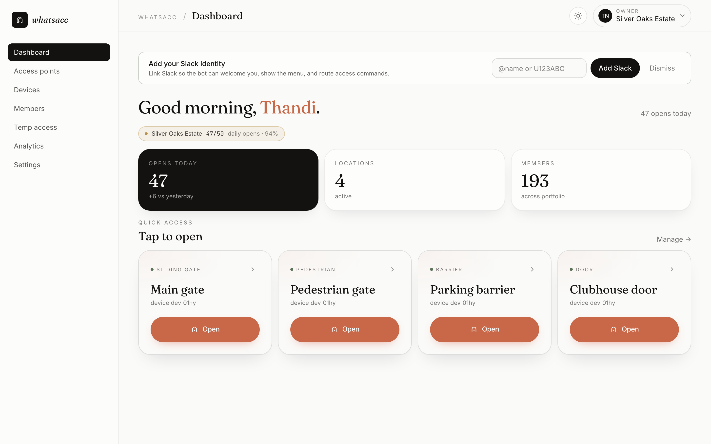
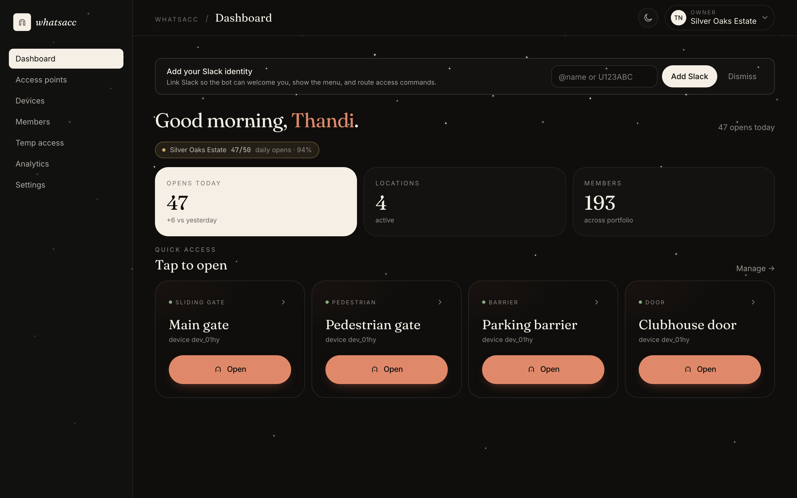
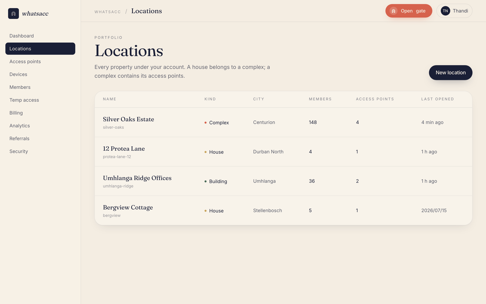
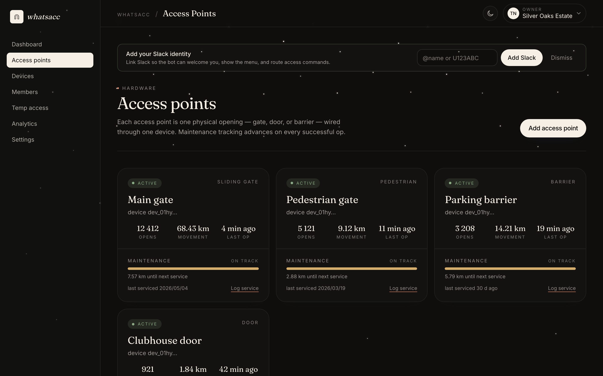
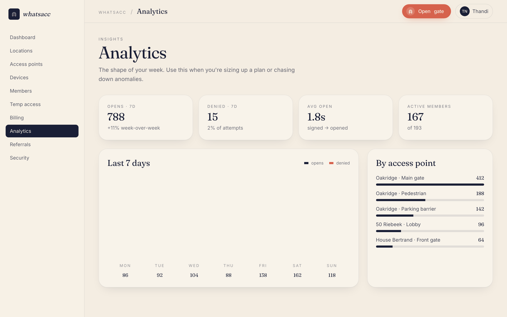
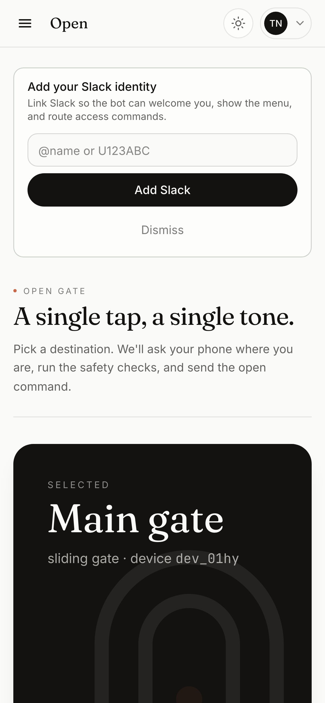
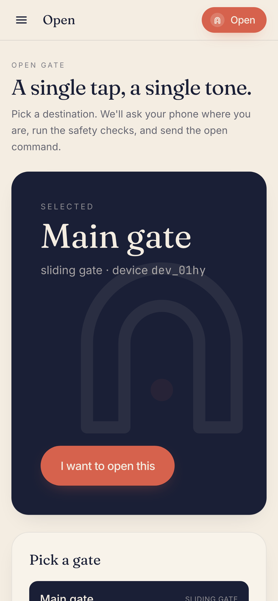

Texts
that open
gates.
whatsacc is a decentralized access network. One MIT-licensed gateway binary turns a WhatsApp, Slack or Discord message into a signed command at your gate.
Run the gateway yourself — your number, your rules, your SQLite file — or use the flagship we host. Same binary, nothing held back.
- Server
- 1 binary
- Channels
- 3 chat apps
- Lock-in
- 0 clouds
- License
- MIT


Like sending a text.
Because it is.
Residents text the word open on the channel they already use — WhatsApp or Slack, Discord soon. The gateway resolves who they are, runs your rules, and signs a command to the controller at the gate. The reply lands in the same thread.
- Identity is
(channel, sender)— one person can be reachable on several channels. - Geofence, time windows and quotas are checked before anything moves.
- Every open — and every denial — lands in the audit log within the same second.
Three moments,
two seconds.
The whole experience hides behind a chat thread. Between the message and the motor sit your rules — and an Ed25519 signature nothing on the network can forge.
-
01
A message arrives
Someone texts
open— on WhatsApp, Slack or Discord. The channel's webhook lands on your gateway and its signature is verified before anything else happens. -
02
Your rules decide
The gateway resolves the sender to a membership, then checks location, access point, time window, geofence and quota. The verdict — either way — is appended to the audit log.
-
03
A signed command goes out
An Ed25519-signed command with a nonce and expiry reaches the controller, which dialed out to the gateway — no inbound ports. It verifies against the pinned key and pulses the relay.
Ranked by how people
actually behave.
Chat is the product. Everything else exists for the days chat can't reach you — and is deliberately boring, in the way a fire escape should be.
Chat — the daily door
No app to install, no fob to lose. Anyone you trust texts the gateway from the channel they already live in. Replies, pickers and quota warnings come back inline.
The app — works offline
The whatsacc app quietly holds a short-lived, gateway-signed grant of your rights. When the internet is down, it finds the controller over LAN or Bluetooth and proves itself with a challenge-response. No cloud, no Meta, no signal required.
The portal
Unlimited opens through the gateway's own web portal, always. Quota warnings in chat point here.
No cloud center.
Anyone can run one.
whatsacc is a network of independent gateways — Go, one binary, one SQLite file.
We run the flagship at whatsacc.com; you can run yours on a Pi behind your couch.
Same code, all of it MIT. The only private thing about our gateway is its .env.
-
Bring your own channel Slack takes minutes — an app manifest and a signing secret (Discord lands next). WhatsApp needs a verified Meta business number (a WABA); that friction is exactly what the hosted flagship absorbs for you.
-
Reachable your way A public VPS needs nothing. Behind NAT, attach a tunnel — vulos-relay is one config line, cloudflared and frp work too. Controllers always dial out, so they never need a port.
-
Billing included — honestly The tiering and Paystack code ships in the binary, MIT, behind a flag that's off by default. Run a free gateway for your street — or a paid one with your own keys and your own tiers. We mean it.
# one binary, one SQLite file, portal embedded
docker run -d --name whatsacc \
-p 8080:8080 -v whatsacc:/data \
ghcr.io/vul-os/whatsacc-gateway
# point a channel at it (slack: minutes)
whatsacc channel add slack --manifest slack.yml
# behind NAT? one line of tunnel config
whatsacc tunnel use vulos-relay # or cloudflared, frp…
✓ gateway up — portal at https://your-gate.example
✓ audit log /data/whatsacc.dbgateway v0.x — image names settle at 1.0 · see docs → run a gateway
Quietly serious
about access.
Only the things gate-openers actually need — each one solid enough to put in front of a body corporate. Anything not shipped yet says so.
Geofence safety
Block opens from across town. Per-location radius; live-location confirmation when the stakes are high. Denials record the actual GPS distance.
Time windows
The cleaner, Tuesdays 08:00–12:00. Contractors for one Saturday. Access that expires on its own instead of living in someone's head.
Visitor passes beta
One-time PIN or QR sent over chat or a link. Your guest opens the gate once, the pass burns, the audit log remembers.
Time & attendance coming
The audit log already has the data — staff clock-in reports and a who's-on-site evacuation list are a settings toggle away.
Audit log
Every open, denial, pairing and config change — actor, location, verdict, message id. Append-only, exportable, kept in your own SQLite file.
Lockdown coming
One command freezes every access point at a location. Protocol support is in the signed-command contract today; the big red button ships with controller I/O.
Per-device keys
Every controller pairs once and pins the gateway's signing key. Commands carry a nonce and expiry — a captured packet is a paperweight.
Multi-channel identity
Memberships key on (channel, sender) — the same person can open from WhatsApp today and Slack tomorrow without being two people in your records.
Multi-tenant locations
House → building → complex. Move members between properties without re-pairing hardware. Roles inherit, then override.
The control room
behind the gate.
Owners and managers see every event live — filter by location, member or device, replay a denied open and see exactly which check rejected it.






Pay for the flagship,
or pay nobody.
The hosted tiers monetize the hard parts — Meta onboarding, our WhatsApp number, hosting and uptime. Never secret code. Self-hosting is free because there's nothing to withhold.
Free
hosted flagshipA single house on the flagship gateway. Try it on your own gate first — most people do.
- 1 location · 1 controller
- Capped opens per month
- Texts go to our WhatsApp number
- Audit log · 30 days
Pro
hosted flagshipFor complexes, buildings and property managers running real volume through the flagship.
- More locations · more controllers
- Unlimited opens
- Geofence, time windows, roles
- Full audit retention · CSV export
- Priority support
Self-host
your gatewayThe same MIT binary we run — bring your own number, bot token and URL. Nothing is held back.
- Every feature, no caps
- Your WABA / Discord / Slack
- Your SQLite file, your audit log
- Billing flag off — or on, with your keys
* Placeholder launch pricing, billed in South African rand via Paystack. The dollar figure is an approximation and drifts with the exchange rate. Final tiers land with gateway 1.0.
The things
people ask first.
Do residents need to install anything?+
No. Residents text the gateway from WhatsApp (or Slack) like any other contact. The only people who install something are the property owner — the controller at the gate — and anyone who wants the optional app for emergency offline access.
What happens when the internet is down?+
The app path keeps working. It holds a short-lived grant, signed earlier by the gateway, and talks to the controller directly over your LAN or Bluetooth with a challenge-response. No connectivity, no cloud, no Meta involved. Controllers also keep their local button and fail-safe wiring — whatsacc is in parallel, never in the way.
Why is WhatsApp harder to self-host than Slack?+
WhatsApp requires a verified Meta business account and phone number (a WABA) before you can receive webhooks. Slack needs an app manifest and a signing secret — minutes (Discord, when it lands, will be a bot token). That asymmetry is the honest core of our business: the hosted flagship absorbs the WABA friction, and you pay for that, not for code.
Is the billing code really open source?+
Yes — MIT, in the same binary, behind a flag that ships off. If you want to run a paid gateway for your neighbourhood with your own Paystack or Stripe keys and your own tiers, that's a supported feature, not a loophole.
What hardware does it work with?+
Any gate, door or barrier with a dry-contact relay input — which is most of them. The controller is a Pi-class board wired in parallel with your existing receiver, on Wi-Fi or a 4G SIM. It only ever dials out, so CGNAT and closed ports don't matter.
Is this secure enough for a complex with 200 residents?+
Commands are Ed25519-signed with a nonce and expiry, and each controller pins its gateway's public key at pairing — a hostile network or hijacked DNS can't forge an open. Add channel-verified identity, optional geofence, per-member rules and an append-only audit log. Every open earns its way through. Details in the security chapter of the docs.
Can I leave the flagship later?+
Yes, and structurally so: the self-hosted gateway is the same binary. Export your data, stand up your own gateway, re-pair your controllers. Nothing about the flagship is special except that we run it well.